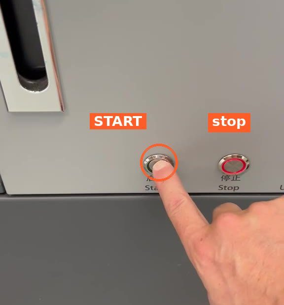
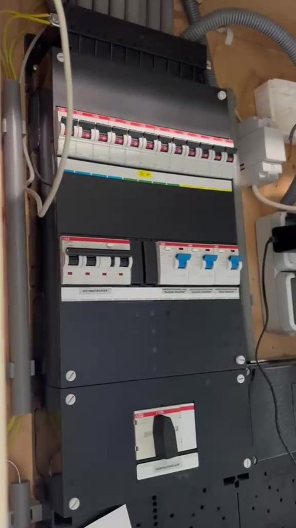

1
Switch on the machine and computer
- When you arrive, press the green START button on the machine straight away.
- Switch on the computer.

Warning: does the power trip?
Sometimes the circuit breaker (the "stopper") trips when you switch on. If so:
- Go to the door behind the machine. The fuse box is there.
- Push the switch that has dropped down back up.
- Go back and continue with step 1.
Nothing tripped? Just continue with step 2.
